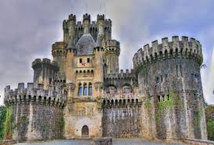

Explore the History, Architecture, and Legacy of Medieval Castles
Castles: More Than Just Fortresses
Castles were vital to medieval society, serving as both strongholds against invaders and residences for the powerful. These towering structures were designed not only for defense but also as symbols of wealth and authority.
The Architecture of Defense and Comfort
Castles were built with thick stone walls, high towers, moats, and drawbridges, all designed for defense against enemy attacks. The design was both functional and symbolic, creating a sense of power and security.

Living Within the Walls
Inside, castles blended practicality with comfort. Great halls hosted feasts and meetings, while rooms were designed for both military defense and daily life. The noble family, soldiers, and servants each had separate spaces within the castle.
A Hub of Governance and Culture
Castles were not just military structures; they were centers of local governance. Lords held court, collected taxes, and enforced laws, while hosting cultural events like tournaments and feasts.
Adapting Through Time
Over time, castles evolved from military strongholds to cultural symbols. As new warfare techniques emerged, castles shifted in function but remained integral to society's political and cultural landscape.
.jpg)
.jpg)